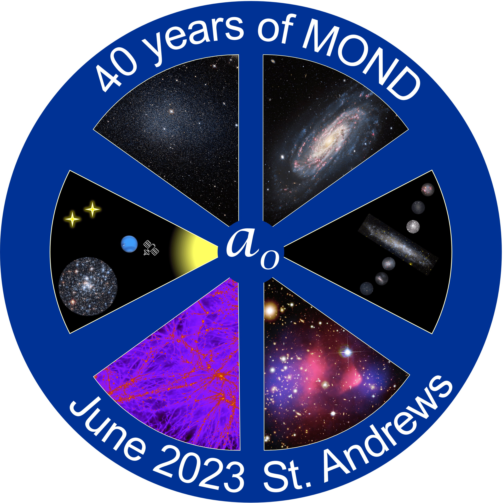
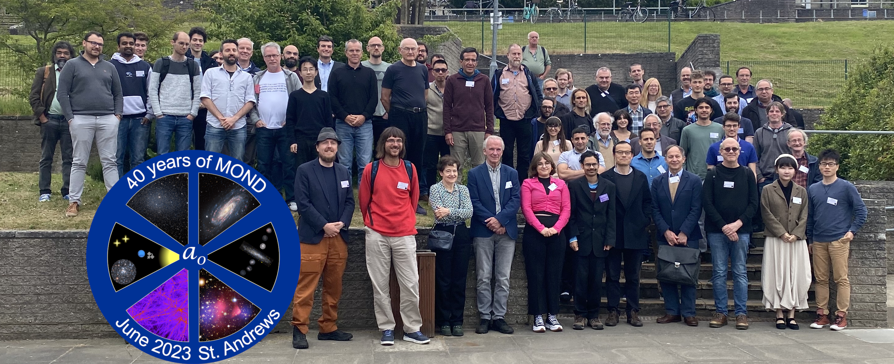
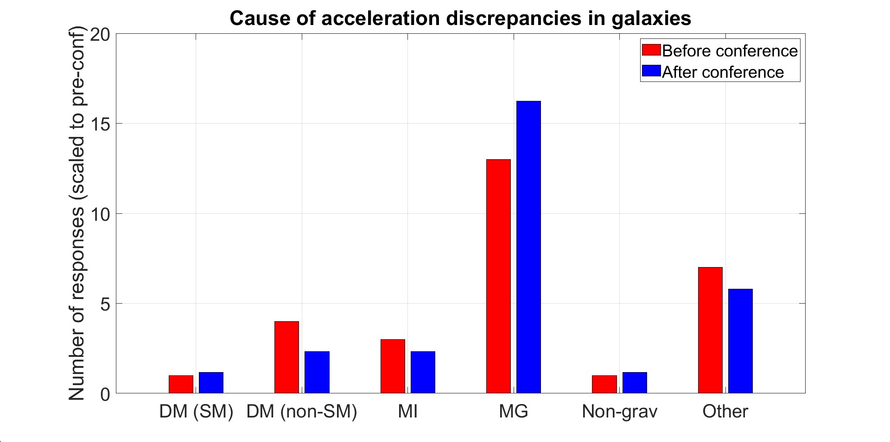
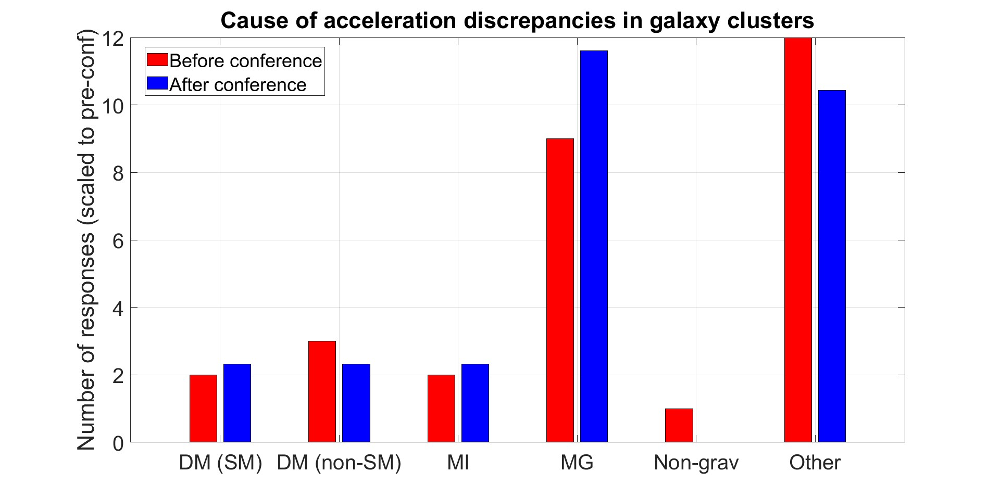
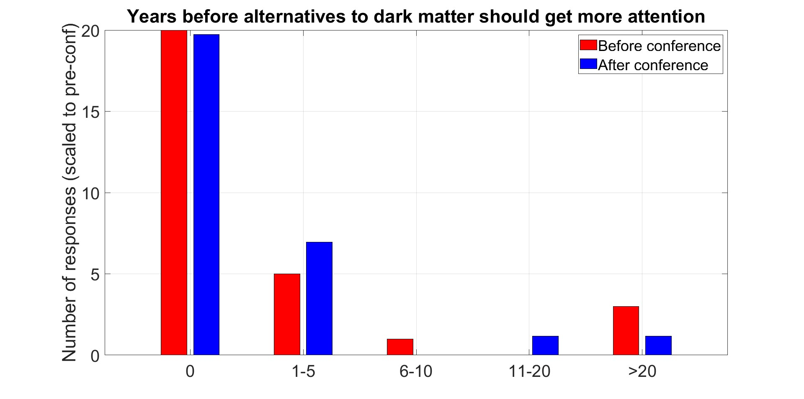

The source of the gravitational field in objects ranging from individual galaxies to the largest scales in the universe is one of the biggest unanswered questions of modern physics. It is generally assumed that the gravitational field in extragalactic systems is dominated by dark matter particles occupying a dark sector that represents new physics beyond the stubbornly successful Standard Model of particle physics. So far, candidates for these particles have evaded detection in remarkably sensitive laboratory experiments: the evidence for missing mass remains entirely astrophysical in nature.
Forty years ago, Weizmann-Institute professor Mordehai Milgrom published a series of three articles in The Astrophysical Journal in which he proposed that the dark matter phenomenon is not due to unknown particles, but to a departure from the known laws of dynamics when the acceleration is about eleven orders of magnitude smaller than that on Earth's surface (Milgrom 1983). Only one year later, in 1984, Jacob Bekenstein and Mordehai Milgrom developed this Modified Newtonian Dynamics (or Milgromian Dynamics, MOND) into a non-relativistic Lagrangian theory (Bekenstein & Milgrom 1984). During the ensuing decades, MOND has developed into a multifaceted paradigm that includes several non-relativistic and relativistic theory proposals, as well as possible connections with quantum gravity theories. Most remarkably, MOND has successfully made many striking and unique a priori predictions.
This conference will commemorate the last 40 years of this modern gravitational paradigm, of its predictive successes as well as its outstanding challenges, and will look to the road ahead.
Topics of the conference include:
Keynote speakers:
This conference will be held in St Andrews and follows similar previous conferences in Edinburgh (2006), Strasbourg (2010 and 2015), Cleveland (2017) and Bonn (2019).
The conference is supported by the School of Physics and Astronomy at the University of St Andrews and the SPODYR group at the University of Bonn.
Registration and abstract submission for this event have now closed. Please only use the abstract form to update previously submitted details here.
The talk slides and posters presented at this event are available for download here and the videos are available here. Invited talks were allocated up to 45 minutes and contributed talks up to 20 minutes, which in both cases does not include questions.
Posters are permitted up to a maximum size of A0 portrait. Poster presenters will receive separate instructions about how to request an announcement of their poster to the other conference delegates in a maximum 2 minute talk without slides.
The programme is available for download here. A booklet with the abstracts of all contributions is available for download here.
Below are graphs showing responses to the surveys held during the conference, scaled to the number of respondents in the pre-conference survey (29). The idea is to estimate the impact of the conference on people's opinions. The red bars on the left are pre-conference while the blue ones on the right are post-conference.
The first and second graphs show what new physics the respondents believe cause the acceleration discrepancies in galaxies and in clusters respectively. The first two options are low-luminosity 'dark matter' (DM) made of either particles within the standard model of particle physics (SM), or outside this model. The next two options are modifications to dynamics, either modified inertia (MI) or modified gravity (MG). There is also an option 'non-grav' that the discrepancies arise because most of the force holding a galaxy together is non-gravitational in nature, as occurs in e.g. the superfluid dark matter picture.
The third graph shows respondents' opinions to how long we should wait before putting more resources into searching for alternatives to dark matter if dark matter is still not detected. The majority thought we should already be doing this.



Accommodation arranged by the University will be available to all guests from June 1st to June 13th and can be booked here. This will cost about £50 per night using the discount code MOND40 and should be booked by the end of April 2023. Guests who wish to arrange their own accommodation should be warned that hotel prices in St Andrews can be inflated during the golfing season in Summer.
Note: International visitors should bring an electrical adaptor so they can use the three-pin British sockets.
The conference will take place in Lecture Theatre B at the School of Physics and Astronomy, University of St Andrews, North Haugh, St Andrews, KY16 9SS. A map of University buildings can be found here. St Andrews itself is a small town and can be crossed on foot in about 25 minutes.
St Andrews is well connected to the rest of Scotland through bus routes. Most bus services terminate at the Bus Station, which is a 5 minute walk from the School of Physics and Astronomy.
The nearest train station is Leuchars, which is 5 miles away. There is a regular bus service (route 99) to the town from this station, along with a taxi rank (at St Andrews the taxi ranks are on Bell Street and in front of Holy Trinity Church on South Street). Leuchars is easily accesible from several major train stations, including direct train links from London King's Cross and Edinburgh Waverley. There is also a direct train service from Edinburgh Gateway for those who fly in to Edinburgh airport.
Further travel details can be found on the University's website.
Francoise Combes (Chair, Paris Observatory), Indranil Banik (St Andrews), James Binney (Oxford), Benoit Famaey (Strasbourg), Lavinia Heisenberg (ETH Zurich), Federico Lelli (Florence), Stacy McGaugh (CWRU), Xufen Wu (Hefei), Hongsheng Zhao (St Andrews)
Elena Asencio, Indranil Banik (head), Alfie Russell